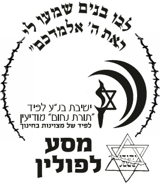
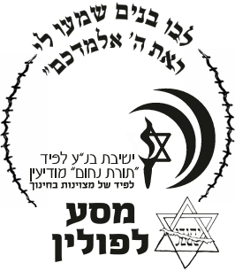

סיכום יומי
קראו את הסיכומים היומיים המכילים את החוויות והתחושות של התלמידים מהמסע, כפי שנכתבו על ידם.
Read Daily Summary
 

מסע לפולין הוא חוויה משמעותית שמעניקה לתלמידים שלנו הבנה עמוקה של ההיסטוריה היהודית,
ובמיוחד של תקופת השואה. זהו מסע של חיבור וזהות, המעשיר את עולמם ומחזק את תחושת השייכות לעמנו ומולדתינו.
האתר נועד לאפשר להורים ולקרובים לעקוב אחרי המסע ולחוות יחד את החוויות שהתלמידים עוברים.
בכל יום יועלה סיכום יומי שנכתב על ידי התלמידים, וגלריה המתעדכנת בתמונות שצולמו במהלך המסע.
הצטרפו אלינו למסע של זיכרון והבנה, ולחוויות משמעותיות שייחרטו בליבנו ויתרמו להנצחת השואה.
קראו את הסיכומים היומיים המכילים את החוויות והתחושות של התלמידים מהמסע, כפי שנכתבו על ידם.
Read Daily Summary